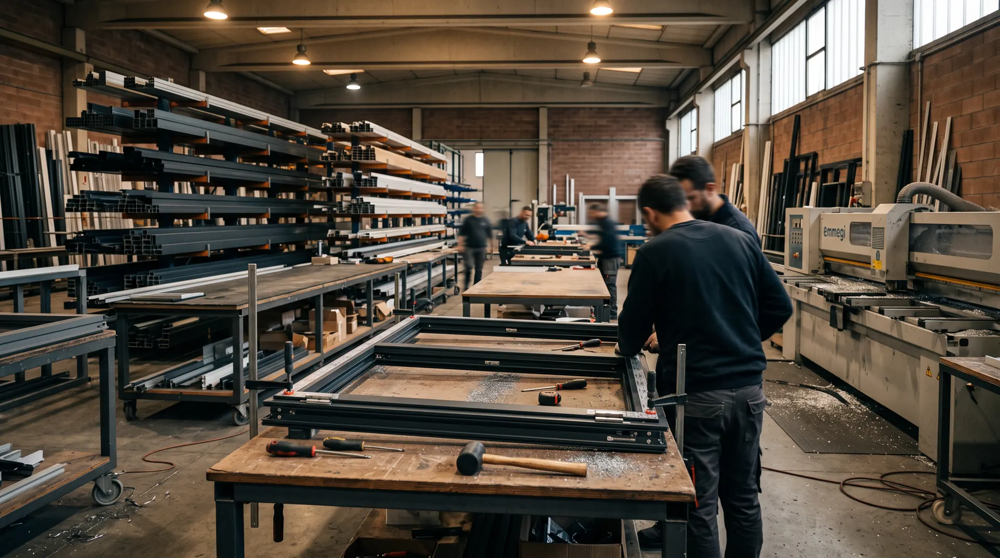
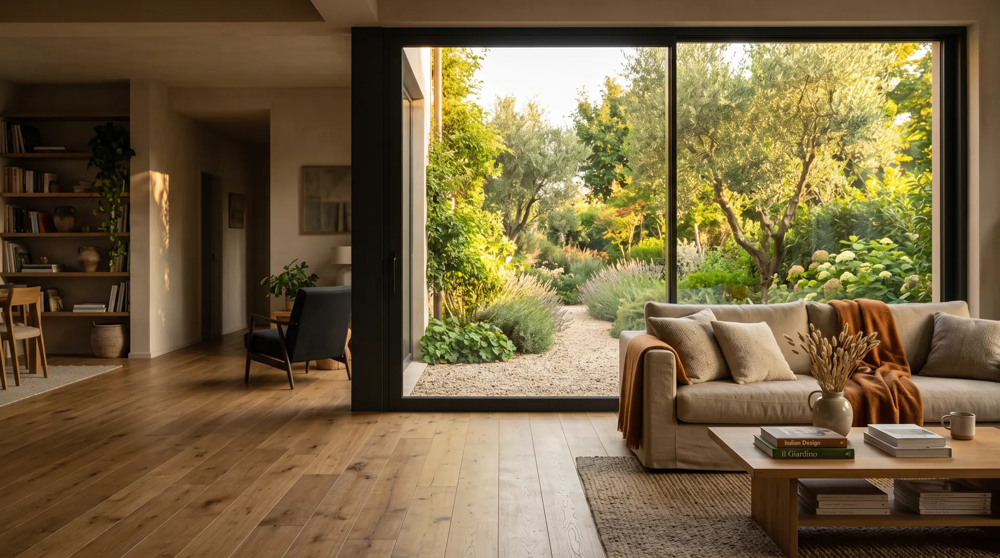
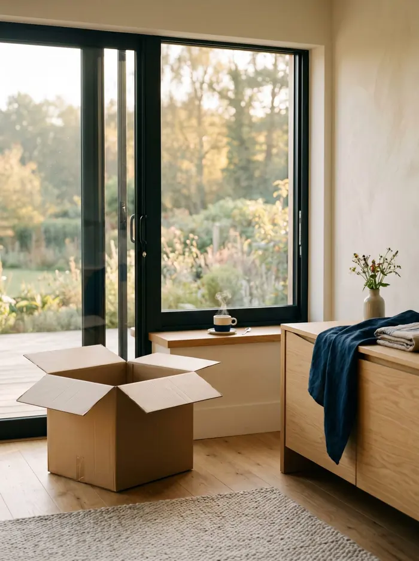
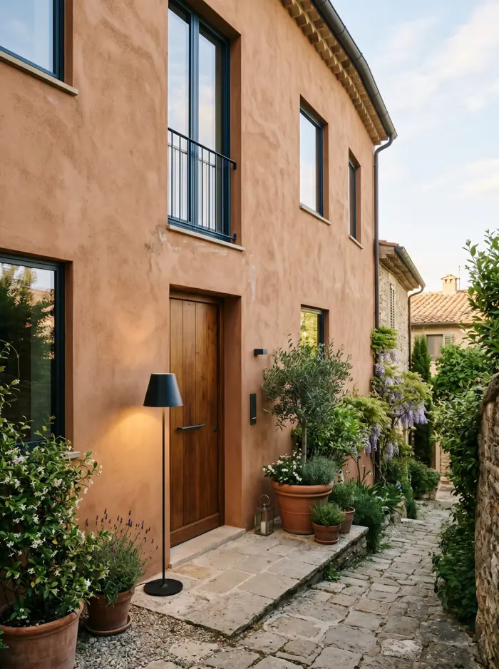
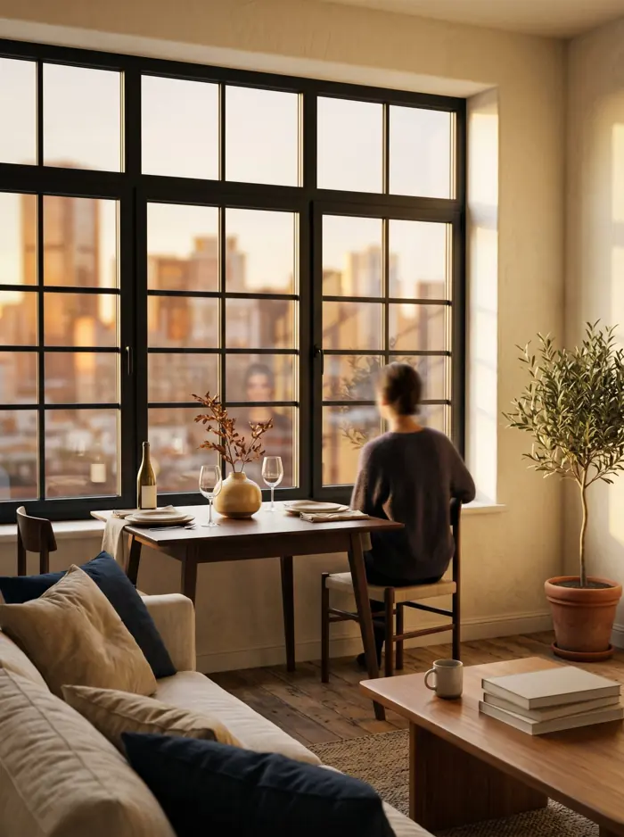
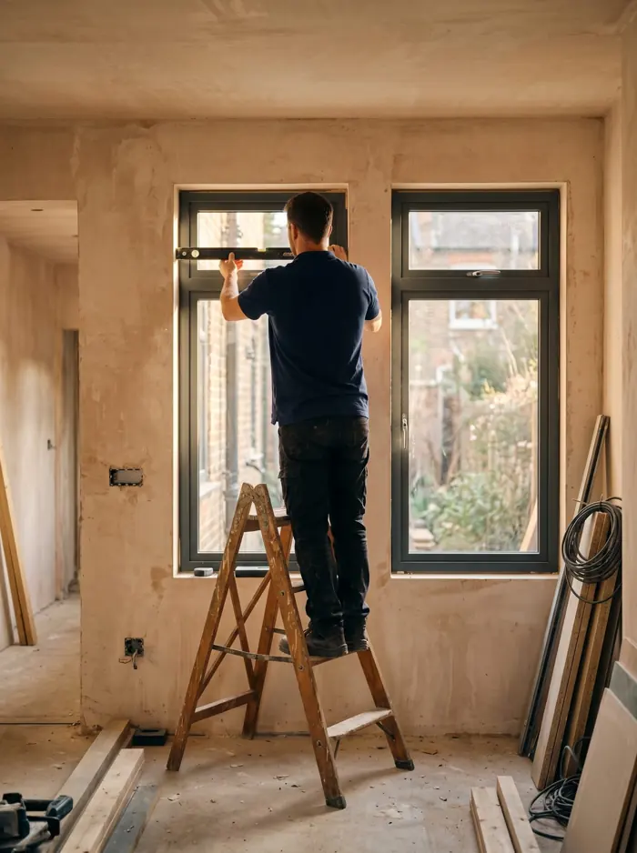
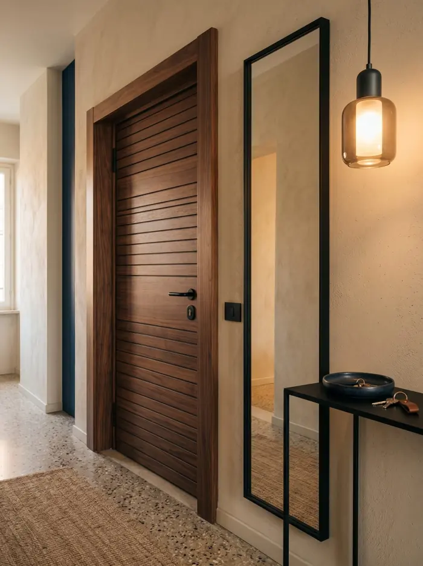
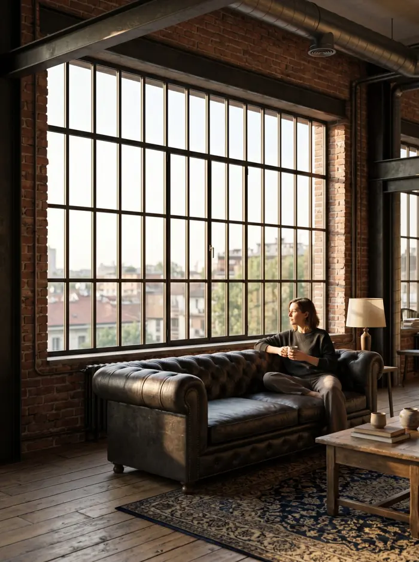

«Oltre allo showroom hanno, nella stessa sede, un'officina… i montatori sono dipendenti della stessa azienda!»



Nata a Gaggiano nel 1985
Una storia di infissi senza pensieri.
Da quarant'anni, a Vigano di Gaggiano. Sempre la stessa famiglia.
Showroom e produzione
Quello che vedi in showroom, lo costruiamo qui.
Showroom e produzione sotto lo stesso tetto, a Vigano di Gaggiano. Con le nostre mani e le nostre macchine.
Serramentista a Gaggiano dal 1985
Produciamo, installiamo e restiamo.
Le stesse persone, la stessa officina. Dal primo sopralluogo alla regolazione tra dieci anni.
oppure scorri
Sette situazioni, un consiglio diverso per ognuna
Perché vuoi cambiare gli infissi? Parti da qui.
Scegli la frase che ti somiglia di più: ti diciamo cosa serve davvero nel tuo caso, e cosa invece puoi risparmiarti.

01«Voglio vivere in questa casa.»
Fare le cose bene, una volta sola.
Leggi il consiglio →
02«Voglio rivenderla al meglio.»
Il dettaglio che chi la visita nota per primo.
Leggi il consiglio →
03«La devo affittare.»
Niente manutenzione, niente lamentele.
Leggi il consiglio → 04«Ho freddo, sento rumori.»
Risolvi il problema. Non l'infisso.
Leggi il consiglio →
05«Sto rifacendo tutto.»
Mille decisioni. Una in meno.
Leggi il consiglio →
06«Voglio sentirmi più sicuro.»
Sicurezza vera, senza l'effetto bunker.
Leggi il consiglio →
07«Voglio una casa di design.»
Linee sottili, più vetro, più luce.
Leggi il consiglio →E se non ti riconosci?Bene.
Vieni in showroom e partiamo da te.
Prenota la visita →Quattro cose
Le cose che ci rendono unici.
01
Produciamo direttamente.
Le tue finestre nascono nella nostra officina di Vigano, con le nostre mani e le nostre macchine.
02
I posatori sono nostri.
Dipendenti, formati da noi. Conoscono il prodotto perché lo vedono nascere. Niente subappalto.
03
L'IVA come si deve.
Segmentata voce per voce, pratica ENEA gestita da noi. Una tutela per te, non un dettaglio.
04
Lo stesso numero da quarant'anni.
Quando tra dieci anni servirà una regolazione, sai già chi chiamare.
Oltre allo showroom hanno, nella stessa sede, un'officina… i montatori sono dipendenti della stessa azienda!Salvatore T. · Recensione Google
La produzione
Qui dentro nasce il tuo infisso. Non è una metafora.
3.000 m² di officina e magazzino, subito dietro lo showroom. Qui si tagliano i profili, si assemblano telaio e anta, si montano ferramenta e vetro e si controlla ogni pezzo, prima che i nostri posatori lo portino a casa tua.
Gli infissi consigliati da chi li ha già scelti.
Non le abbiamo scritte noi.
«Ho cambiato finestre e persiane di una casa vecchia a Milano: adesso finalmente non sento più l'incessante rumore del traffico.»
«Una squadra di installatori precisi, veloci e puliti… rispettando i tempi concordati e lasciando l'area di lavoro in perfetto ordine.»
«Abbiamo affidato a Centro Infissi Gaggiano la sostituzione di una dozzina di infissi e zanzariere presso la nostra abitazione in zona San Siro e il risultato ha superato le nostre aspettative.»
«Il materiale, le cerniere, le maniglie sono fatte veramente bene: una volta montati si vede e si tocca la vera qualità.»
«Da subito si è creato quel clima di fiducia che ha permesso di capire le mie esigenze, consigliandomi nel migliore dei modi.»
«Hanno iniziato il lavoro all'ora stabilita, finendo con un giorno di anticipo.»
«Azienda storica e a conduzione familiare, ma che si aggiorna sempre.»
Showroom · Vigano di Gaggiano
Prima di scegliere, vieni a provarli.
Lo showroom è in via Danimarca 7, davanti alla nostra officina. Nessun impegno: solo la possibilità di capire se siamo le persone giuste per la tua casa.
Lunedì–venerdì 8:00–12:00 e 13:30–18:00 · sabato 9:00–12:00 · domenica chiuso
Grazie. Ti richiamiamo entro un giorno lavorativo per confermare giorno e ora.
Dove lavoriamo
Da Gaggiano a Milano.
Siamo a Gaggiano, tra il Naviglio Grande e Milano. Lavoriamo a Milano Sud e Milano Ovest, a Corsico, Trezzano sul Naviglio, Abbiategrasso e nei comuni intorno.
Sei un architetto o uno studio tecnico? L'area che ti serve è un'altra.
Vai all'area architetti